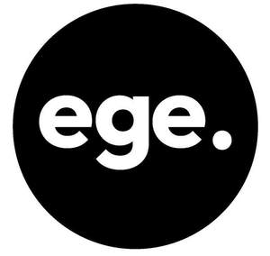
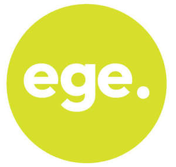
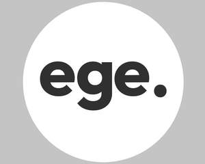

Trade Mark Journal No.2025/018 2 May 2025
UK00004154010 29 January 2025 (9,35,37,38,39,42)
Mark 1

Mark 2

Mark 3

The third mark in the series consists of the letters “ege” followed by a full stop, each in black font, against a white circular background. The grey rectangular background shown outside the white circle does not form part of the mark and is included only to show the white circle element of the mark
- Class 9
- Acoustic alarms; sound alarms; alarms; amplifiers; camcorders; cameras [photography]; cases for smartphones; cases for smartphones incorporating a keyboard; cell phone straps; charging stations for electric vehicles; cinematographic cameras; computer hardware; computer keyboards; computers; cordless telephones; covers for smartphones; covers for tablet computers; digital photo frames; electric door bells; electronic book readers; eyewear; fire alarms; foldable smartphones; gimbals for digital cameras; gimbals for smartphones; hand-held electronic dictionaries; hands-free kits for telephones; headphones; headsets; headsets for playing video games; holders adapted for mobile telephones and smartphones; humanoid robots having communication and learning functions for assisting and entertaining people; humanoid robots with artificial intelligence for preparing beverages; humanoid robots with artificial intelligence for use in scientific research; in-car telephone handset cradles; infrared detectors; interactive touchscreen terminals; laboratory robots; lanyards for cell phones; laptop computers; life-saving apparatus and equipment; loudspeakers; microphones; mobile phone chargers; mobile phone ring holders; mobile phone ring stands; mobile phone screen protectors; mobile telephones, cell phones and cellular phones; monitors [computer hardware]; navigation apparatus for vehicles [on-board computers]; notebook computers; pedometers; personal digital assistants [PDAs]; personal stereos; point-of-sale [POS] terminals; portable document scanners; portable media players; portable power chargers; portable speakers; printers for use with computers; protective films adapted for computer screens; protective films adapted for smartphones; radios; rearview cameras for vehicles; record players; security surveillance robots; selfie lenses; selfie ring lights for smartphones; selfie sticks [hand-held monopods]; sleeves for laptops; smart rings; smart speakers; smartglasses; smartphones; smartwatches; smoke detectors; solar batteries; solar panels for the production of electricity; sound recording apparatus; stands adapted for laptops; stands for photographic apparatus; subwoofers; tablet computers; tape recorders; teaching robots; telecommunication apparatus in the form of jewellery / telecommunication apparatus in the form of jewellery; telephone apparatus; teleprompters; thermal imaging cameras; thin client computers; thin film speakers; ticket dispensing terminals, electronic; ticket printers; tripods for cameras; USB flash drives; user-programmable humanoid robots, not configured; vehicle radios; video baby monitors; video mixing desks; video recorders; video screens; video telephones; viewfinders, photographic; virtual reality controllers; virtual reality headsets; walkie-talkies; wearable activity trackers; wearable computers; wearable speakers; wearable video display monitors; wireless portable printers for use with laptops and mobile devices; wireless speaker microphones.
- Class 35
- Administration of consumer loyalty programs; procurement services; arranging and conducting of commercial events; business inquiries; commercial administration of the licensing of the goods and services of others; corporate communications services; demonstration of goods; distribution of samples; marketing; organization of exhibitions for commercial or advertising purposes; organization of trade fairs; procurement services for others [purchasing goods and services for other businesses]; production of advertising films; promotion of goods and services through sponsorship of sports events; providing business information via a website; provision of an online marketplace for buyers and sellers of goods and services; public relations; sales promotion for others; the bringing together, for the benefit of others, of a variety of goods, namely, acoustic alarms, sound alarms, alarms, personal alarm devices, electronic alerting devices, sensors, air quality sensors, humidity sensors, movement sensors, sound sensors, light sensors, temperature sensors, amplifiers, camcorders, cameras [photography], cases for smartphones, cases for smartphones incorporating a keyboard, cell phone straps, charging stations for electric vehicles, cinematographic cameras, computer hardware, computer keyboards, computers, cordless telephones, covers for smartphones, covers for tablet computers, digital photo frames, electric door bells, electronic book readers, eyewear, fire alarms, foldable smartphones, gimbals for digital cameras, gimbals for smartphones, hand-held electronic dictionaries, hands-free kits for telephones, headphones, headsets, headsets for playing video games, holders adapted for mobile telephones and smartphones, humanoid robots having communication and learning functions for assisting and entertaining people, humanoid robots with artificial intelligence for preparing beverages, humanoid robots with artificial intelligence for use in scientific research, in-car telephone handset cradles, infrared detectors, interactive touchscreen terminals, laboratory robots, lanyards for cell phones, laptop computers, life-saving apparatus and equipment, loudspeakers, microphones, mobile phone chargers, mobile phone ring holders, mobile phone ring stands, mobile phone screen protectors, mobile telephones, SIM cards, cell phones and cellular phones, monitors [computer hardware], monitoring systems [software], digital care support system [software], navigation apparatus for vehicles [on-board computers], notebook computers, pedometers, personal digital assistants [PDAs], personal stereos, point-of-sale [POS] terminals, portable document scanners, portable media players, portable power chargers, portable speakers, printers for use with computers, protective films adapted for computer screens, protective films adapted for smartphones, radios, rearview cameras for vehicles, record players, security surveillance robots, selfie lenses, selfie ring lights for smartphones, selfie sticks [hand-held monopods], sleeves for laptops, smart rings, smart speakers, smart glasses, smartphones, smartwatches, smoke detectors, solar batteries, solar panels for the production of electricity, sound recording apparatus, stands adapted for laptops, stands for photographic apparatus, subwoofers, tablet computers, tape recorders, teaching robots, telecommunication apparatus in the form of jewellery, telecommunication apparatus in the form of jewellery, telephone apparatus, teleprompters, thermal imaging cameras, thin client computers, thin film speakers, ticket dispensing terminals, electronic, ticket printers, tripods for cameras, USB flash drives, USB cables, user-programmable humanoid robots, not configured, vehicle radios, video baby monitors, video mixing desks, video recorders, video screens, video telephones, video imaging systems, viewfinders, photographic, virtual reality controllers, virtual reality headsets, walkie-talkies, wearable activity trackers, wearable computers, wearable speakers, wearable video display monitors, video display monitors, wireless portable printers for use with laptops and mobile devices, wireless speaker microphones, excl uding the transport thereof, enabling customers to conveniently view and purchase those goods by means of electronic media; all the aforesaid in relation to wireless internet-connectable or other network-connectable electronic devices and associated infrastructure.
- Class 37
- Repair services in relation to wireless internet-connectable or other network-connectable electronic devices and associated infrastructure.
- Class 38
- Communications by cellular phones; communications by telephone; computer aided transmission of messages and images; message sending; providing access to databases; providing information in the field of telecommunications; providing online forums; providing online virtual reality-based forums for work collaboration; rental of smartphones; rental of telecommunication equipment; rental of telephones; telephone services; transmission of digital files; transmission of electronic mail; transmission of podcasts; all the aforesaid in relation to wireless internet-connectable or other network-connectable electronic devices and associated infrastructure.
- Class 39
- Courier services [messages or merchandise]; delivery of goods; packaging of goods; parcel delivery; storage / warehousing; storage of goods; transportation and transportation logistics; all the aforesaid in relation to wireless internet-connectable or other network-connectable electronic devices and associated infrastructure.
- Class 42
- Computer rental; computer software consultancy; computer software design; computer technology consultancy; creating and maintaining websites for others; design of show scenery; electronic data storage, management, back up and cleansing services; graphic design of promotional materials; installation of computer software; maintenance of computer software; platform as a service [PaaS]; quality control, assurance and testing services,; rental of computer software; rental of smartglasses; rental of user-programmable humanoid robots, not configured; research and development of new products for others; research in the field of telecommunications technology; software as a service [SaaS]; technological consultancy; telecommunications technology consultancy; unlocking of mobile phones; updating of computer software; software configuration, modification and/or customisation services; software compatibility testing services; all the aforesaid in relation to wireless internet-connectable or other network-connectable electronic devices and associated infrastructure.
Eurostar Global Electronics Limited
Representative: Mills & Reeve LLP